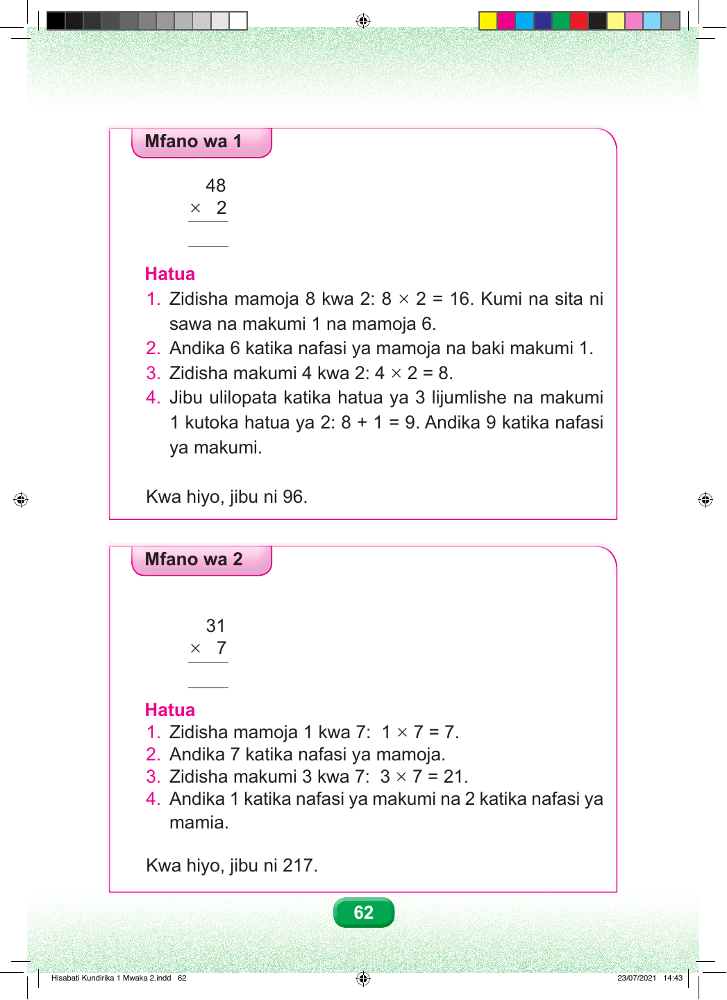

Mfano wa 1 48 × 2 Hatua 1. Zidisha mamoja 8 kwa 2: 8 × 2 = 16. Kumi na sita ni sawa na makumi 1 na mamoja 6. 2. Andika 6 katika nafasi ya mamoja na baki makumi 1. 3. Zidisha makumi 4 kwa 2: 4 × 2 = 8. 4. Jibu ulilopata katika hatua ya 3 lijumlishe na makumi 1 kutoka hatua ya 2: 8 + 1 = 9. Andika 9 katika nafasi ya makumi. Kwa hiyo, jibu ni 96. Mfano wa 2 31 × 7 Hatua 1. Zidisha mamoja 1 kwa 7: 1 × 7 = 7. 2. Andika 7 katika nafasi ya mamoja. 3. Zidisha makumi 3 kwa 7: 3 × 7 = 21. 4. Andika 1 katika nafasi ya makumi na 2 katika nafasi ya mamia. Kwa hiyo, jibu ni 217. 62 Hisabati Kundirika 1 Mwaka 2.indd 62 23/07/2021 14:43